01 / EVENTS
活动
浏览活动、报名参加、查看票券，并支持现场核销。
一起参与
桐邻项目展示与社区运营说明
浏览活动、报名参加、查看票券，并支持现场核销。
阅读邻里分享、发布帖子、评论互动，并提供举报治理。
按列表或地图找地点，查看详情、导航、收藏与分享。
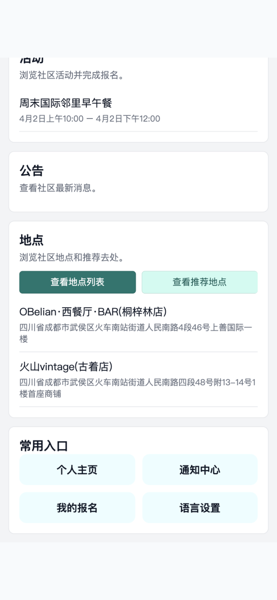
微信小程序 · CloudBase dev 实时数据
从 Home 查看真实活动、已发布地点和常用入口。
报名活动、评论帖子、收藏地点或发起导航。
在 Me 查看报名、收藏、帖子、评论和通知。
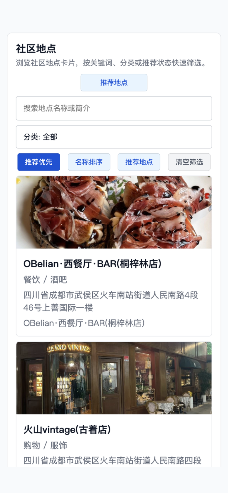
微信小程序 · CloudBase dev 实时数据
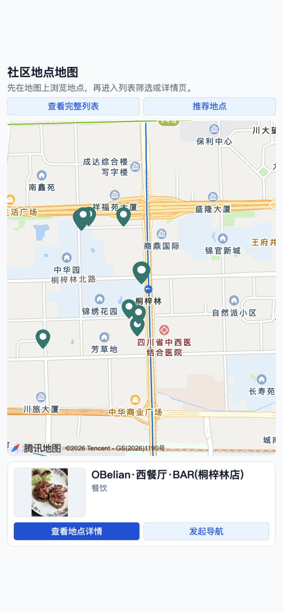
微信小程序 · CloudBase dev 实时数据
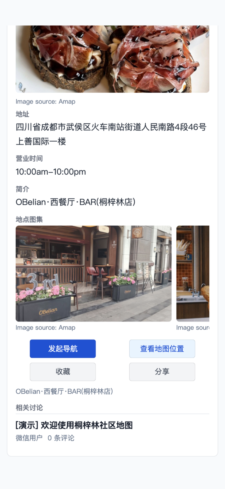
微信小程序 · CloudBase dev 实时数据
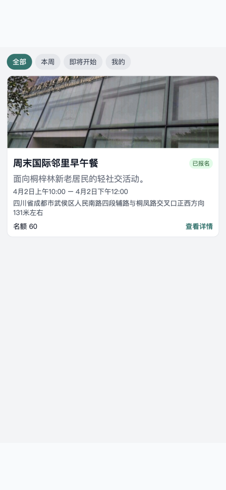
微信小程序 · CloudBase dev 实时数据
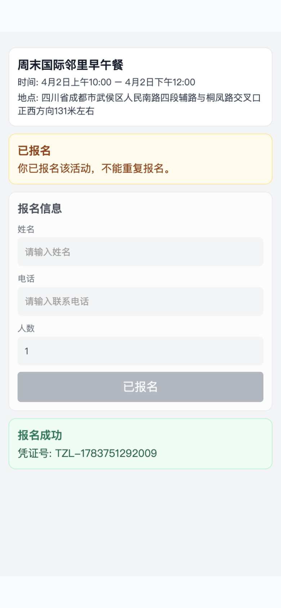
微信小程序 · CloudBase dev 实时数据
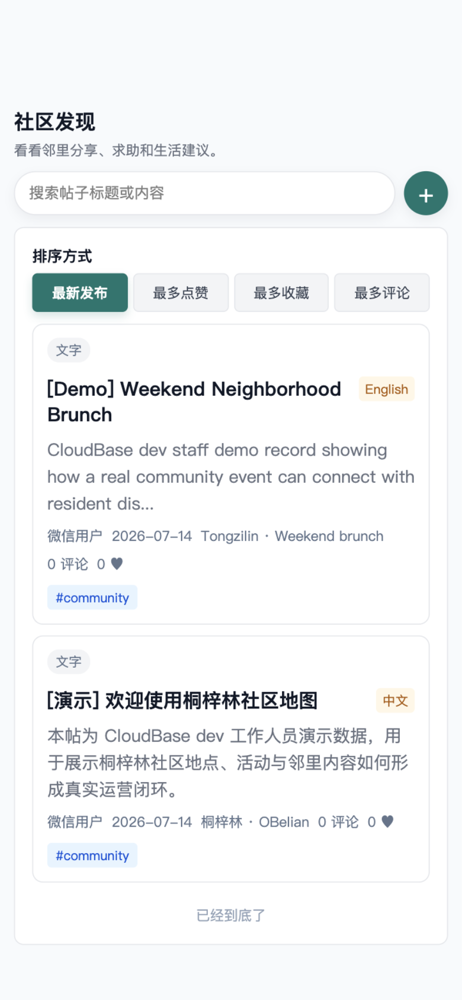
微信小程序 · CloudBase dev 实时数据
“分享一条路况、一次活动、一个问题，也是在补充社区地图。”
居民发帖 · 评论互动 · 点赞收藏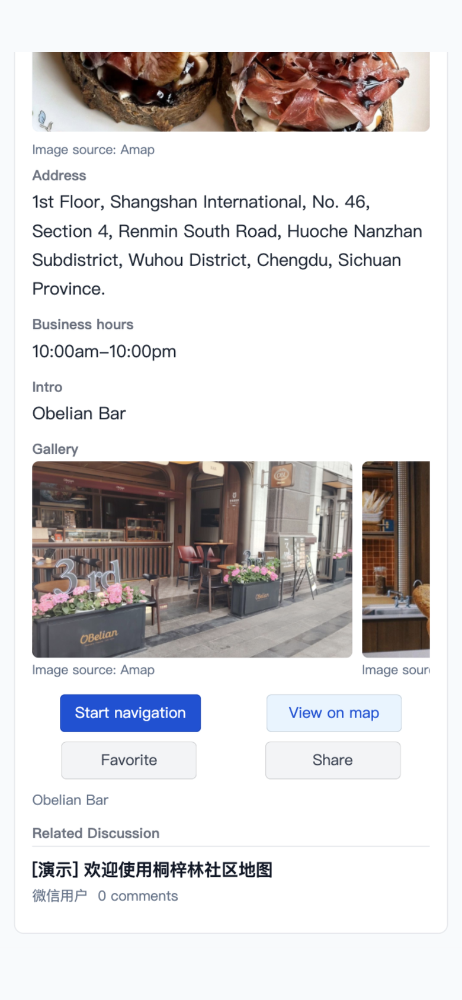
微信小程序 · CloudBase dev 实时数据
活动、地点、公告等使用中文和英文字段，发布前由内容负责人补齐。
帖子和评论不伪造另一语言版本，只标注原始语言并本地化界面。
导航、按钮、状态提示和地点正式内容统一切换，UGC 仍保留作者原文。
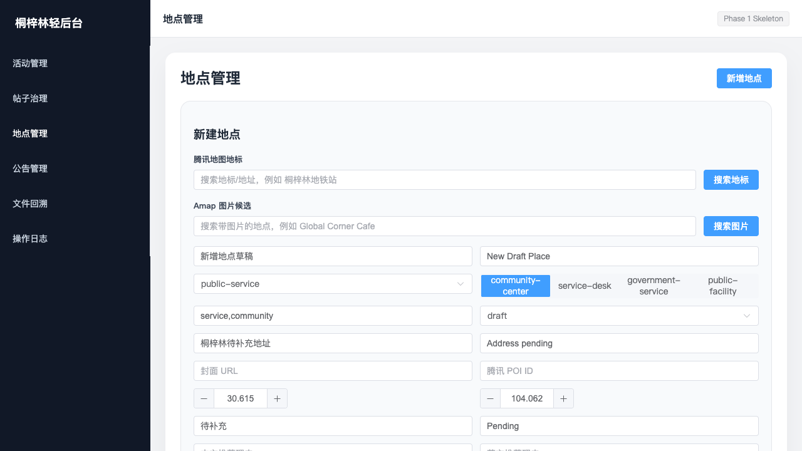
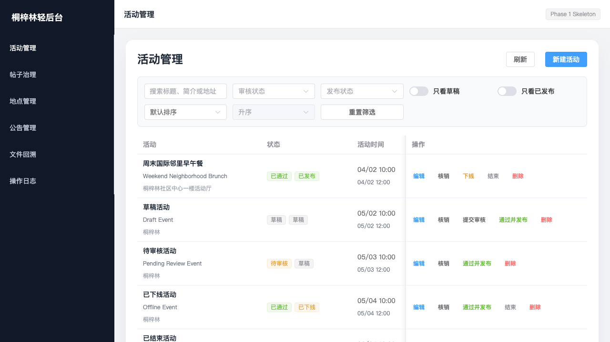
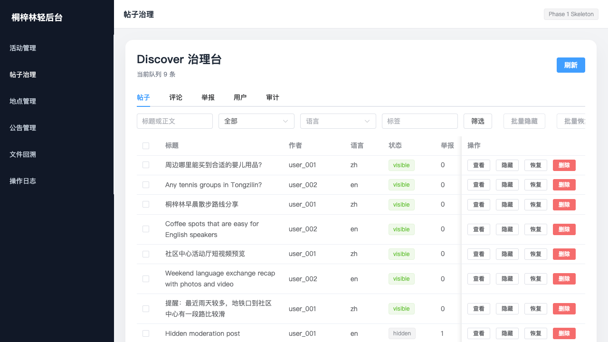
填写名称、分类、坐标、图片和中英文介绍。
草稿可继续补充；只有 published 内容进入公开端。
字段、权限、状态和公开边界在同一层处理。
列表、地图摘要和详情读取正确范围的数据。
现场、活动方
或志愿者提交
先保存，不对
居民公开
补齐正式内容
核对事实
状态变更后
进入公开端
更新图片、时间
与联系方式
失效内容及时
停止公开
决定发布、下架和治理，维护公告、地点与运营节奏。
把好入口核对事实，补齐中英双语正式内容，避免占位信息上线。
保证可信提交活动资料、更新状态，现场配合报名名单与票券核销。
连接参与采集点位、补充图片与变更线索，由工作人员审核后公开。
发现变化适合继续进行内容准备、工作人员培训和全流程验收。
这些事项需要账号负责人、CloudBase 操作员、QA 与发布负责人共同完成。
明确负责人和证据，清理测试数据，准备可信的首批正式内容。
持续更新地点、活动和公告，形成双语审核与下架机制。
观察真实使用、通知触达和内容需求，仍然聚焦桐梓林单社区。